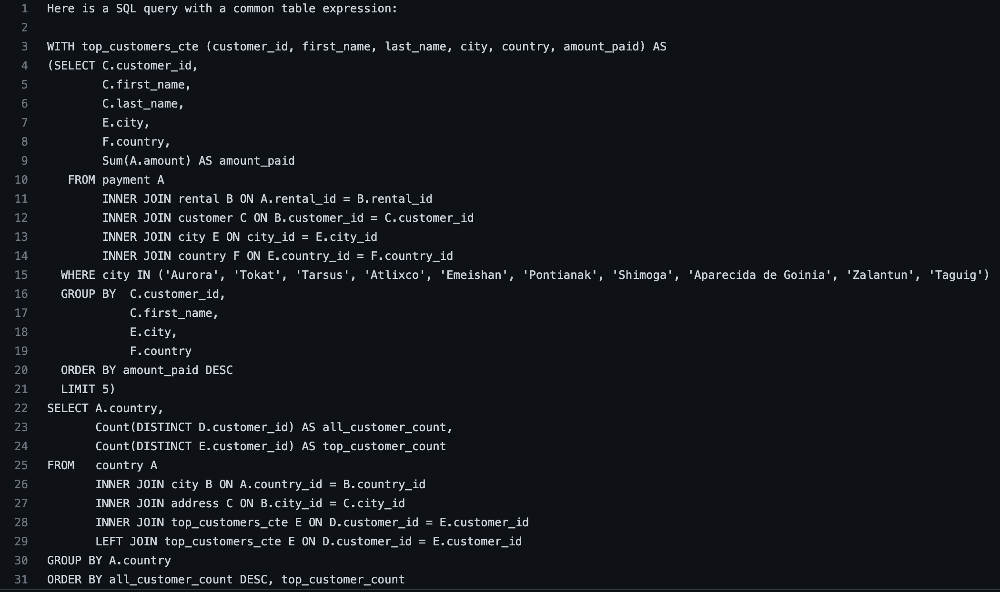

Video Rental SQL Analysis
1. Project overview
What:
In this scenario-based challenge, the analysis aims to provide data-driven answers to key business questions presented by Rockbuster Stealth Management to inform the 2020 company strategy. The following is based on data extracted via PostgreSQL and visualized in Tableau. Analysis of customer and sales data stored in a SQL database to inform the online transition of a video rental business.
Why:
Rockbuster Stealth operates video rental stores across the globe. The company is interested in an analysis of customer demographics and rental transactions to inform its strategy as it transitions into an online movie streaming platform.
How:
1. Query the data using PostgreSQL
2. Visualize key data insights with Tableau
2. Extracting and visualizing the data
Examining the data
Surfacing relevant insights from the PostgreSQL database included the following:
For more detail, feel free to have a look at the GitHub repository.
Surfacing key insights:
Management defined the key questions in this scenario, including:
Visualizing Insights
Some of the key insights were then visualized in Tableau (see Tableau Public). In addition, a presentation was prepared for management.